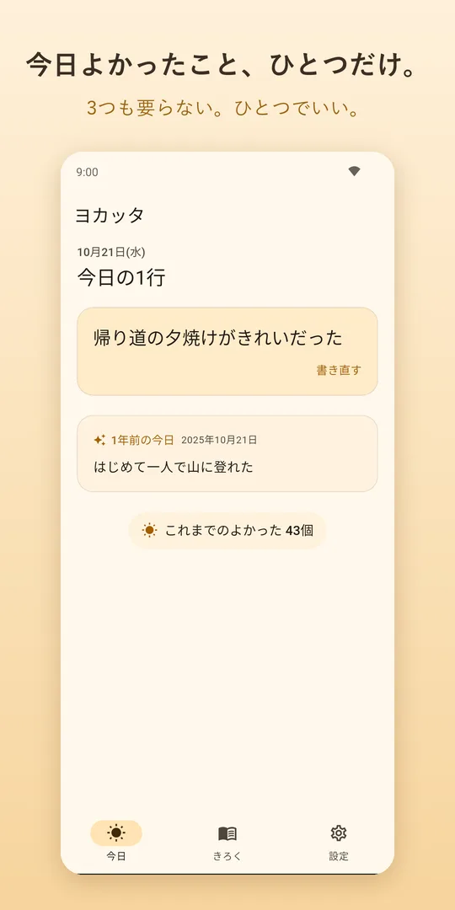
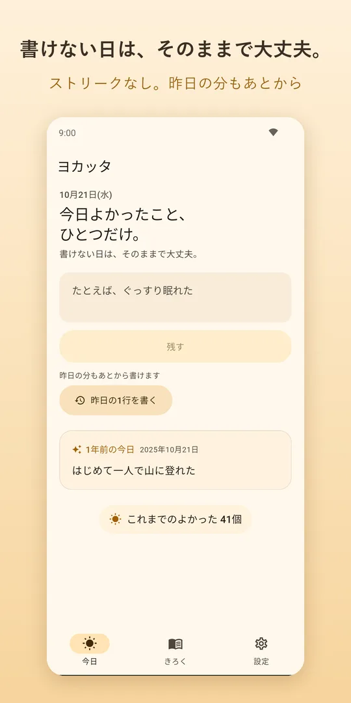
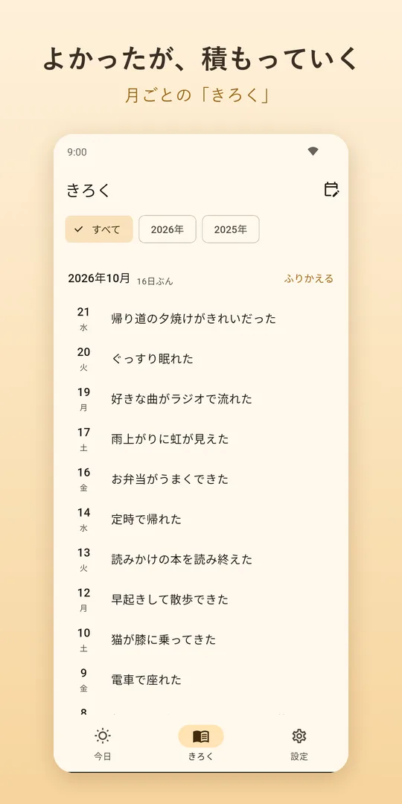
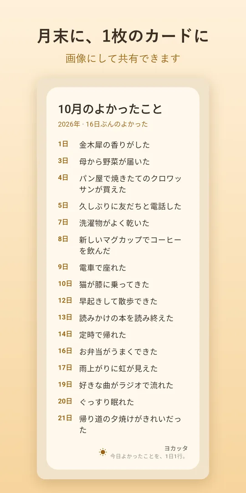
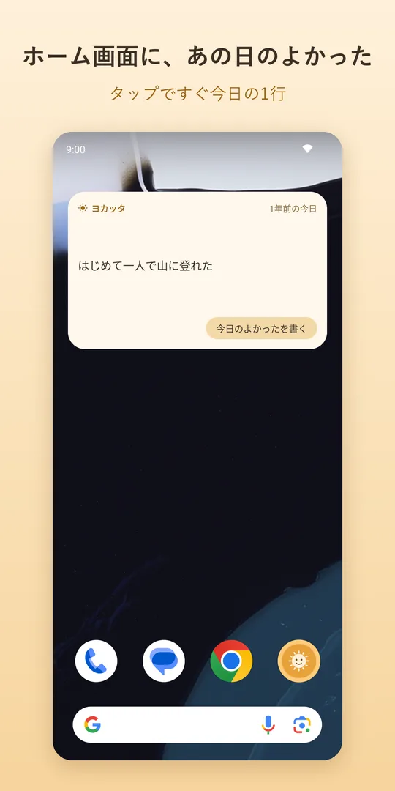
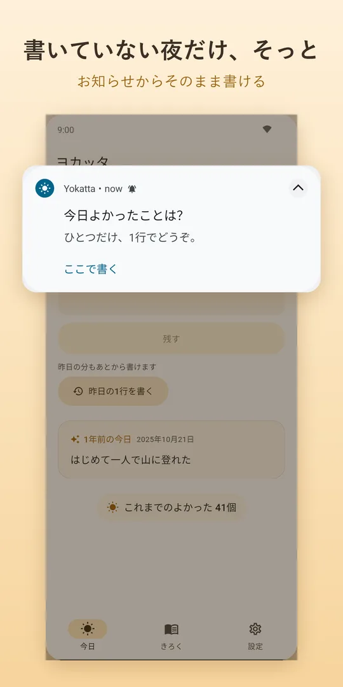

ヨカッタは、1日1行だけ書くポジティブ日記アプリです。3つも書かなくていい。長い文章もいらない。「帰り道の夕焼けがきれいだった」、それで今日の日記はおしまいです。
Google Play で無料ダウンロードAndroid 用 ・ 全機能無料(小さなバナー広告あり) ・ 登録不要

1日1行、100文字まで。「ちゃんと書く」をやめると、続けられます。
ストリーク(連続記録)はありません。途切れても何も失いません。昨日の分もあとから書けます。
「1年前の今日」「1か月前の今日」。ホーム画面のウィジェットにも、あの日の1行が毎日ひとつ。
毎晩のお知らせは、書いた日は鳴りません。お知らせからそのまま1行を書けます。





アカウント登録はいりません。書いた1行は端末の中にだけ保存され、どこにも送信しません。機種変更のときはバックアップを保存できます。
すべての機能を無料で使えます。アプリ内課金はありません。画面の下に小さなバナー広告を表示します(使いはじめの日は表示しません)。
何も起きません。連続記録も、空いた日の数もありません。また書きたい日に、ひとつ書けば大丈夫です。
iPhone 版は準備中です。公開されたらこのページでお知らせします。